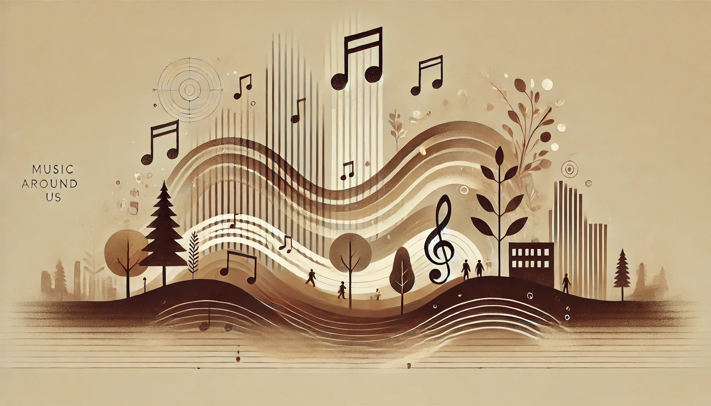
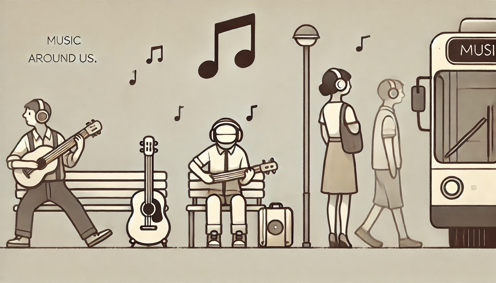

Kedves olvasó!
Üdvözlünk ezen az oldalon, ahol a zene csodálatos világába merülhetünk együtt! Gondolj csak bele: ahogy egy puha takaró körülölel egy hideg napon, úgy burkol be minket a zene minden dallama és ritmusa. Mindegy, hogy egy nyugodt, szép zongoradarabot hallgatsz, vagy épp egy lendületes gitárszólóval töltöd meg a teret, a zene mindig képes otthont adni a léleknek. Olyan ez, mint egy csendes sarok, ahová bármikor visszavonulhatunk, hogy megtaláljuk a nyugalmat, az örömöt, vagy éppen új inspirációkat. Itt, ezen az oldalon az a célunk, hogy minden zenerajongó felfedezhesse azt a csodát, ami a hangok mögött rejlik. Merülj el, kapcsolódj, és engedd, hogy a zene átöleljen – hiszen minden dallam egy újabb ölelés a lelkünknek.
Üdvözlettel:
- A honlap készítői -
A zene az egyik legősibb és legmélyebb módja annak, hogy kifejezzük és megértsük az érzelmeinket. Évezredek óta minden kultúra a maga módján formálta és használta a zenét, hogy kifejezze örömét, bánatát, és összetartozását. Egy jó dallam vagy ritmus képes emlékeket előhívni, régi érzéseket felidézni és hangulatot teremteni.
A zenehallgatás során az agy endorfint és dopamint termel, amelyek a boldogság érzéséért felelősek, így a zene képes csökkenteni a stresszt és javítani a hangulatunkat.
A zenének még a tanulási képességeinkre is pozitív hatása lehet, hiszen a megfelelő háttérzene segít koncentrálni, és új ötleteket előhívni. Az edzés közben hallgatott energikus zene növeli a kitartást és az állóképességet, hiszen a ritmus ösztönöz és motivál. A közös zenehallgatás és a koncertek pedig közösségi élményt nyújtanak, amelyben az emberek kapcsolatokat építhetnek és közös emlékeket szerezhetnek.
A zenében az is nagyszerű, hogy szavak nélkül is megérthetjük egymást, hiszen egy jól megválasztott dallam képes áthidalni a nyelvi és kulturális akadályokat. Emellett az önkifejezés és identitás formálásának is kiváló eszköze: zenei ízlésünk sok mindent elárulhat rólunk és megkülönböztet másoktól. A zenén keresztül gyakran olyan érzéseket vagy gondolatokat élünk meg, amelyeket másképp talán nem tudnánk kifejezni.
Mindezek miatt a zene a mindennapok szerves része, amely javítja az életminőségünket, gazdagítja a lelki világunkat, és folyamatos inspirációt nyújt.

A zene szinte mindenhol jelen van a mindennapjainkban, még akkor is, ha nem mindig vesszük észre. Az utcán sétálva, bevásárlás közben vagy éppen egy kávézóban ülve könnyedén belebotlunk háttérzenékbe, amelyek befolyásolják az érzéseinket, anélkül, hogy tudatosan figyelnénk rájuk. A boltokban játszott zenék például gyakran azért vannak jelen, hogy kellemesebb légkört teremtsenek, és tovább maradásra ösztönözzenek minket. A zene hatással lehet a vásárlási döntéseinkre is, mert a különféle stílusok és tempók különféle hangulatokat idéznek elő. Otthon a zene segíthet ellazulni egy fárasztó nap után, de akár fel is pörgethet minket egy takarítás vagy főzés közben. Az autóban a rádió vagy a kedvenc lejátszási lista elűzi az unalmat és javítja a hangulatunkat vezetés közben. A telefonos várakozás során is zenét hallgatunk, hogy az idő gyorsabban teljen, és türelmesebben álljunk a helyzethez. A fitnesztermekben szóló energikus ritmusok segítenek a sportolóknak jobban koncentrálni és nagyobb erőbedobással edzeni. A munkahelyen is gyakran használunk zenét, hogy csökkentsük a zajokat, vagy hogy növeljük a koncentrációnkat. Az online videók és filmek aláfestő zenéi pedig még inkább átélhetővé teszik az élményt, és hatékonyabban közvetítik az üzenetet. Így a zene mindennapjaink során szinte észrevétlenül formálja az érzelmeinket és a viselkedésünket, különböző helyzetekben és módokon színesítve az életünket.

A zenehallgatás számos pozitív hatással bír az egészségünkre, mind testi, mind lelki szinten. Kutatások szerint a zene csökkenti a stresszhormonok szintjét, és képes enyhíteni a szorongást, illetve a depresszió tüneteit. Nyugtató dallamok hallgatása akár csökkentheti a vérnyomást és a pulzusszámot is, így hozzájárul a szív- és érrendszeri egészség megőrzéséhez. A ritmusos, harmonikus zenék hallgatása segíthet a légzés szabályozásában, ezért meditáció vagy relaxáció közben gyakran alkalmazzák. Az Alzheimer-kór és más demenciával élők számára a zene különösen hasznos lehet, mert az ismerős dallamok és ritmusok stimulálják az agyat, és segítik az emlékek felidézését. Egyes kórházakban már terápiás célokra is használják a zenét, amely a fájdalomérzet csökkentésére és a betegek megnyugtatására szolgál. Fájdalomcsillapító hatása is lehet, hiszen a kellemes dallamok elterelik a figyelmet és csökkentik a szenvedés érzését. A műtéti előkészítéseknél például sok helyen alkalmazzák, hogy a betegek kevésbé szorongjanak. Az alvászavarokkal küzdők számára is ajánlott lehet az esti nyugtató zene, ami elősegíti a relaxációt és gyorsabb elalvást eredményez. A csoportos zenei tevékenységek, mint az énekkarok vagy a zenekarok, társas kapcsolatok építését is támogatják, ami önbizalom-növelő és stresszcsökkentő hatású. Összességében a zene nemcsak kellemes időtöltés, hanem komoly gyógyító erővel is rendelkezik, amely javítja az emberek fizikai és mentális egészségét.